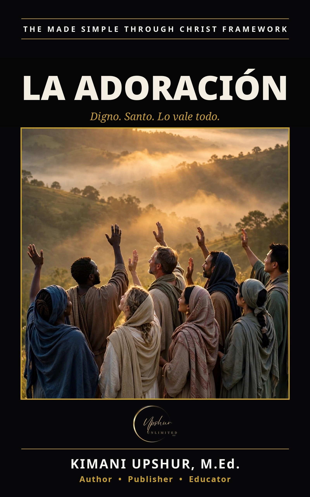

La Adoración
Una guía bíblica para dar a Dios la gloria que Él merece
por Kimani Upshur, M.Ed.
¿Prefieres la edición en inglés? Worship — read in English
**La adoración no es el acto de apertura del culto.** Es el evento principal de tu vida: la razón por la que fuiste creado, la ocupación del cielo y el latido de todo corazón que pertenece a Dios.
Este libro está construido sobre dos anclas de la Escritura: «Dios es Espíritu; y los que le adoran, en espíritu y en verdad es necesario que adoren» (Juan 4:24) y «Venid, adoremos y postrémonos; arrodillémonos delante de Jehová nuestro hacedor» (Salmo 95:6). A partir de ellas, en catorce capítulos claros y directos descubrirás:
• Qué es realmente la adoración — y qué no es: no es un estilo de música, ni un sentimiento, ni solo para los domingos • Adorar en espíritu: el Espíritu Santo guía; adorar en verdad: sin máscaras • Adorar al Padre, por medio del Hijo, por el Espíritu • El sacrificio vivo: la adoración como un estilo de vida, no un evento • El lugar secreto de la adoración privada y el poder de la adoración congregacional • Adorar en el fuego: cuando la alabanza cuesta todo • La obediencia es adoración: la billetera, el trabajo y la voluntad • Los ídolos que roban tu adoración, y cómo destronarlos • El corazón agradecido, el arma de la alabanza y la canción que nunca termina: la adoración del cielo
Cada capítulo cierra con un único paso que puedes dar hoy. El apéndice responde con franqueza las preguntas reales que la gente hace sobre la adoración, y el libro cierra con una oración y con «Una invitación personal: Entrega tu vida a Jesucristo».
Con citas de la Escritura tomadas de la Biblia Reina-Valera 1909 (RVR1909). Desde una cosmovisión cristiana: la adoración es la respuesta de toda una vida de un corazón redimido al valor de Dios — Padre, Hijo y Espíritu Santo.
Kimani Upshur, M.Ed. — Upshur Unlimited LLC. Más en upshurunlimitedllc.com.
En catorce capítulos claros y directos descubrirás:
- Qué es realmente la adoración (y qué no es)
- Venid, adoremos y postrémonos
- Adoración en espíritu — el Espíritu Santo guía
- Adoración en verdad — no se permiten máscaras
- Del Padre, por medio del Hijo, por el Espíritu
- El sacrificio vivo: la adoración como estilo de vida
- El lugar secreto: la adoración privada
- Cuando nos reunimos: el poder de la adoración congregacional
- Adoración en el fuego: cuando la alabanza cuesta todo
- La obediencia es adoración: la billetera, el trabajo y la voluntad
- Los ídolos que roban tu adoración
- El corazón agradecido: la gratitud es adoración
- Cuando la adoración mueve el cielo: el arma de la alabanza
- La canción que nunca termina: la adoración del cielo y la tuya
- Editorial
- Upshur Unlimited LLC
- Autor
- Kimani Upshur, M.Ed.
- Formato
- Libro electrónico
- Idioma
- Español
- Precio
- $4.99
- Capítulos
- 14
- Escritura
- Biblia Reina-Valera 1909 (RVR1909)
Más en español
El departamento de libros en español de Upshur Unlimited LLC seguirá creciendo con nuevas ediciones verificadas.